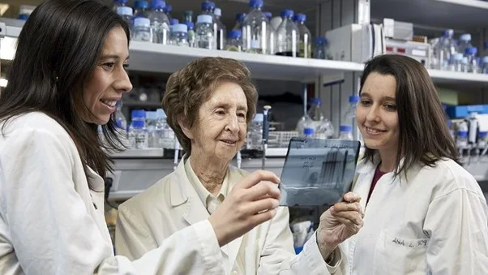

Prof. Margarita Salas: a pioneering woman scientist in Spain

Prof. Margarita Salas (1938-2019) is considered the most important researcher in Molecular Biology in Spain to date.Her story not only shows the hard work of an excellent and motivated scientist but also the barriers that she had to overcome due to the simple fact of being a woman scientist. For these reasons, she has been a guiding light for generations of Spanish scientists, including myself.
Prof. Margarita Salas in the laboratory.
Source: http://cgquimicos.com/portfolio/la-cientifica-margarita-salas-premio-a-la-excelencia-quimica-2014/
Prof. Margarita Salas Viñuelas was born in Asturias (Spain) in 1938. Despite the strong gender discrimination in society back in those days (the dictatorship regime in Spain denied women an equal role to men in workplaces, at home etc.), her parents made her, and her siblings go to college without any distinction. She loved Chemistry and Medicine equally, but finally she decided to pursue a bachelor in Organic Chemistry.
During college times, she met Prof. Severo Ochoa (Nobel Prize in Physiology or Medicine 1959) who told Margarita Salas about his research in biochemistry, and she got completely fascinated. Once Margarita Salas finished her studies, Prof. Ochoa suggested her to apply for a PhD with Prof. Alberto Sols, an excellent biochemist and enzymologist in Madrid (Spain). A long time afterwards, Prof. Sols acknowledged during a conference that he did not have high expectations from a female researcher, but he could not deny a recommendation letter from the Nobel Prize Prof. Ochoa. Therefore, Prof. Sols thought “bah, a girl. I will give her a research project with low importance, thus, if she does not make it, it will not matter” and he accepted Margarita Salas as a PhD student in his lab. Margarita Salas did not blame him for those thoughts, she said that it was not his fault, but the times they had to live.
During her PhD, Margarita Salas shared the lab with Eladio Viñuela who she had met before in college and became her husband later. After they both finished their PhDs in Madrid, they moved to New York (USA) as Postdoctoral researchers with Prof. Ochoa. Here, Margarita never felt gender discrimination. In fact, Prof. Ochoa assigned different projects to Margarita and her husband so that they could learn English and develop their independent research lines.
After almost four years, Margarita and Eladio decided to go back to Spain to establish the field of Molecular Genetics. The phage Phi29, a small virus that can infect bacteria, was the selected research topic. They found many issues to get funding and decided to team up to apply for international funding and set up a research group together. Back in Spain, Prof. Margarita Salas felt a strong gender discrimination again. Her achievements were not acknowledged, and she used to be known just as ‘the wife’ of Prof. Eladio Viñuela. He considered that as a terrible injustice and decided to pursue another research line (the African swine fever virus) by himself, so that she could be recognized as the main author of the works on Phi29 as she deserved it.
Among her great achievements, it can be highlighted:
The discovery and patent of a new mechanism for the replication of DNA with the polymerase from Phi29, starting with small amounts of DNA. This is nowadays used for PCR (polymerase chain reaction) in basic research, forensics, oncology, and studies of ancient DNA.
The determination of the only direction (5’-3’) which the DNA message is read during the processes that transfer genetic information from DNA to protein (replication, transcription and translation).
Her contribution to prove that the triplet of RNA nucleotides UAA represents a stop codon, where protein synthesis ends.
Prof. Salas was awarded numerous prizes for her scientific works, finally getting the recognition that she deserved in such male-oriented times. Afterwards, Margarita felt a swap in the gender discrimination that she had suffered before. All the prizes that she was awarded got a higher impact in the media compared to those of her male colleagues because it was the first time that they were awarded to a female scientist, which she used positively to improve visibility of women scientists.
Apart from research, Prof. Salas was very passionate about teaching and mentoring young scientists. She created a huge scientific family of molecular biologists, some of them are currently women leaders in Spanish science. Prof. Margarita Salas, who was a shy person with an austere lifestyle, would invite her many current and former students to dinner at a restaurant after receiving awards or when celebrating an anniversary.

Prof. Margarita Salas with two of her students in the laboratory in 2019.
Source: https://www.eldiario.es/cienciacritica/margarita-salas-queda-legado-ejemplo_132_1264196.html
Prof. Margarita Salas was always a strong ambassador of scientific research, as she used to say: “A country without research is a country without development”, and especially she used to advocate for basic research. She believed science communication is crucial to make our society understand the advantages of scientific research and the latest findings that are ongoing. In her opinion, scientists should do more outreach, and journalists should make more and better science communication, for instance broadcasting scientific TV programmes in prime time.
Personally, I find inspiration in the passion for science of Prof. Margarita Salas, and I admire her patience-and-perseverance style.
Thanks, Prof. Margarita Salas, for giving visibility to women scientists in Spain and abroad.
*This blog post was inspired by the science communication blog “Mujeres con ciencia” and the article Nature 576, 208 (2019).
Ana I. Benítez-Mateos (@anabel_gzl)
Postdoctoral researcher
University of Bern
From the 500 Women Scientists Bern-Fribourg archive. Originally published 24 January 2022.
Explore more stories